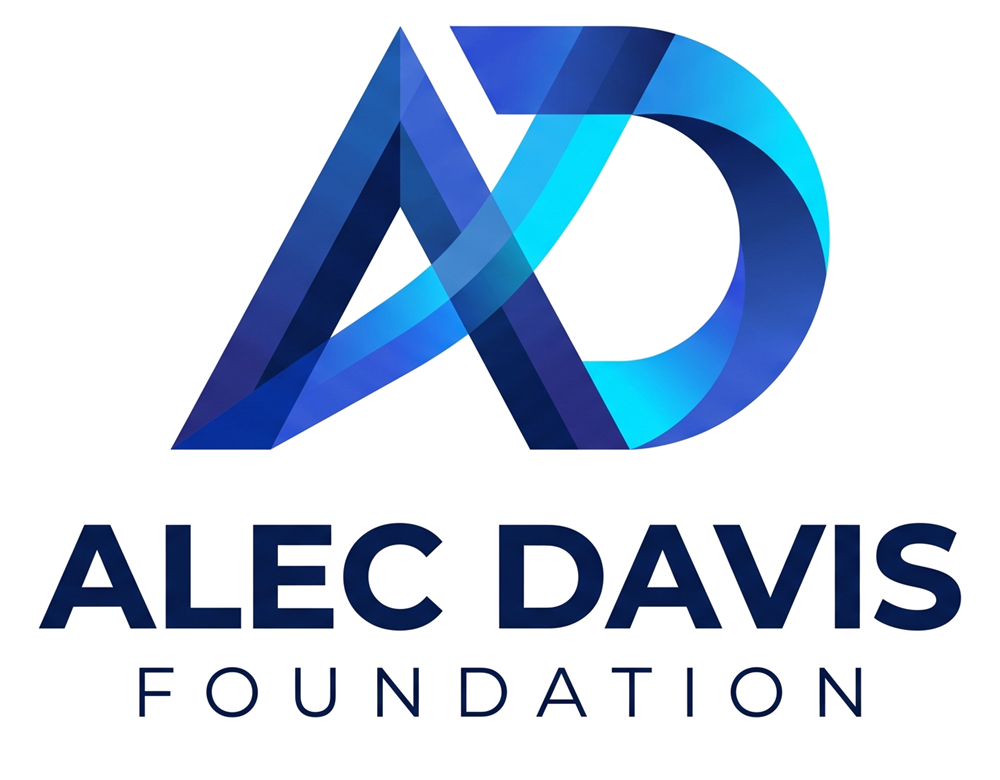

Resources for donors, partners and advisors.
Answers to common questions, guidance on tax-smart and planned giving, help lines for people in crisis, and materials for anyone sharing our story.
Frequently asked questions
Where does my donation go?
Every contribution goes toward building the foundation's $1 billion permanent endowment. During the campaign, gifts are held as restricted capital reserve assets by our 501(c)(3) fiscal sponsor, dedicated solely to launching the Alec Davis Foundation, and net contributions remain invested.
Is my gift tax-deductible?
Yes. Contributions are made through a registered 501(c)(3) public charity and are tax-deductible to the extent allowed by law. You will receive a written acknowledgment for your records. Consult your tax advisor about your specific situation.
Will any of my gift be spent before the foundation launches?
No program distributions are required during the accumulation phase. Net contributions stay invested so that the full value is available to capitalize the endowment when it is transferred to the Alec Davis Foundation.
What happens when the $1 billion goal is reached?
Once the goal is reached and the Alec Davis Foundation receives IRS approval as a nonprofit private operating foundation, the full endowment will be transferred to it through an exit grant. From then on, the principal is locked and its returns fund programs every year.
Can I give monthly?
Absolutely. Monthly supporters join the Founding Circle and help build the endowment steadily over time. Visit the Donate page to choose a monthly gift.
Can I give stock, cryptocurrency or other assets?
Yes. Gifts of appreciated securities, donor-advised fund grants and other assets are welcome and can be especially tax-efficient. Email alec@alecdavis.com and we will provide transfer instructions.
Can I include the foundation in my will?
Yes, and it is one of the most meaningful ways to support a permanent endowment. See our Legacy Giving section for sample language and beneficiary designation details.
How will I know how the campaign is going?
We are committed to transparency. Supporters will receive regular updates on the campaign's progress, the endowment, and the steps toward launching the foundation.
Give in the way that works best for you
Many supporters can give more, at a lower net cost, by choosing the right type of gift. Here is a quick guide to discuss with your financial advisor.
Cash & card gifts
The most direct way to give. One-time or monthly gifts are tax-deductible to the extent allowed by law for donors who itemize.
Donate nowAppreciated securities
Donating stock held more than one year may let you avoid capital gains tax and deduct the full fair market value.
Request transfer detailsDonor-advised funds
Already have a DAF? Recommend a grant to the endowment campaign through your DAF sponsor.
Get grant detailsIRA charitable distributions
If you are 70½ or older, a qualified charitable distribution from your IRA may count toward required distributions without being taxed as income.
Ask about eligibilityEmployer matching
Many employers match charitable gifts, sometimes two to one. Check with your HR department to double your impact.
Learn about matchingEstate & beneficiary gifts
Gifts through a will, trust or beneficiary designation cost nothing today and are generally free of federal estate tax.
Plan a legacy giftThis information is general in nature and is not tax, legal or financial advice. Please consult your own advisors.
Four steps to a gift that gives forever
- 1
Consider your goals
Think about the people you want to provide for and the legacy you want to leave.
- 2
Talk with your advisor
Your attorney or financial planner can help you choose the right gift type.
- 3
Use the right designation
Copy our beneficiary language into your will, trust or account forms.
- 4
Let us know
Tell us about your plans so we can thank you and honor your wishes.
If you or someone you know needs help now
The causes we exist to serve affect real people today. These free, confidential national resources are available around the clock. In an emergency, call 911.
Veterans Crisis Line
For veterans, service members and their families. Dial 988, then press 1.
988, press 1Childhelp National Child Abuse Hotline
Help for children, parents and concerned adults.
1-800-422-4453The Alec Davis Foundation is not affiliated with these organizations. Listings are provided as a public service.
Giving terms, made simple
- Endowment
- A permanent fund whose principal is invested and preserved, with only its returns used to support charitable work.
- Principal
- The original amount of an endowment. For the Alec Davis Foundation, the $1 billion principal is never spent.
- Restricted capital reserve
- Contributions set aside for a single designated purpose. Campaign gifts are reserved solely for capitalizing the foundation.
- Accumulation phase
- The current campaign stage, during which contributions are gathered and invested and no program distributions are required.
- Fiscal sponsor
- An established 501(c)(3) public charity that receives and administers tax-deductible gifts on behalf of a charitable program.
- Exit grant
- A grant that transfers a fiscally sponsored program's assets to its own newly formed nonprofit entity.
- Private operating foundation
- A private foundation that primarily conducts its own charitable programs, rather than mainly making grants to others.
- Payout
- The portion of an endowment's value distributed each year for charitable purposes, funded by investment returns.
- Bequest
- A gift made through a will or trust that takes effect after the donor's lifetime.
- Beneficiary designation
- Naming a charity to receive assets such as an IRA, 401(k), life insurance policy or bank account directly.
- Donor-advised fund (DAF)
- A charitable giving account that lets donors contribute, receive a deduction, and recommend grants over time.
- Qualified charitable distribution
- A direct transfer from an IRA to a qualified charity by donors age 70½ or older, which may be excluded from taxable income.
Transparency, in writing
As the campaign progresses, key documents will be published here for supporters and advisors.
Foundation overview
A one-page summary of the mission, the endowment model and the 13 pillars of impact.
Campaign progress report
Regular updates on contributions to the endowment campaign and milestones reached.
Investment policy summary
How the endowment will be invested, governed and protected for the long term.
Planned giving guide (PDF)
A printable guide for donors and their advisors, including sample bequest language.
Corporate partnership deck
Sponsorship opportunities and recognition benefits for companies and organizations.
Need something specific?
Advisors and prospective partners can request additional information directly.
Email usHelp us share the story
Ambassadors, partners and media are welcome to use these assets when writing about the Alec Davis Foundation.



We would love to hear from you.
Whether you are a donor, an advisor or a potential partner, reach out and we will respond personally.